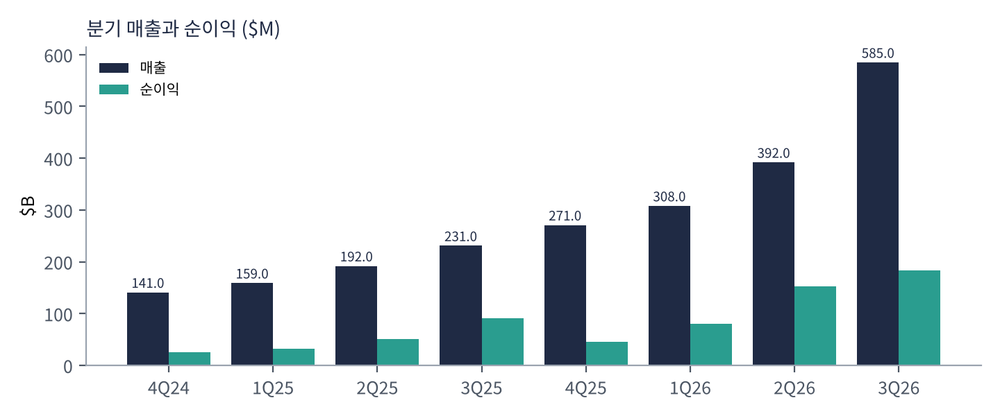
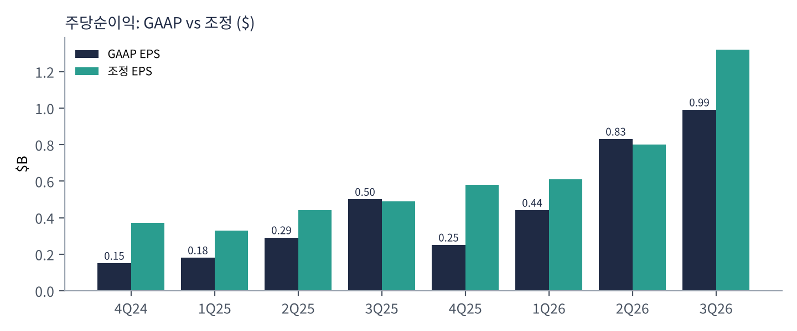
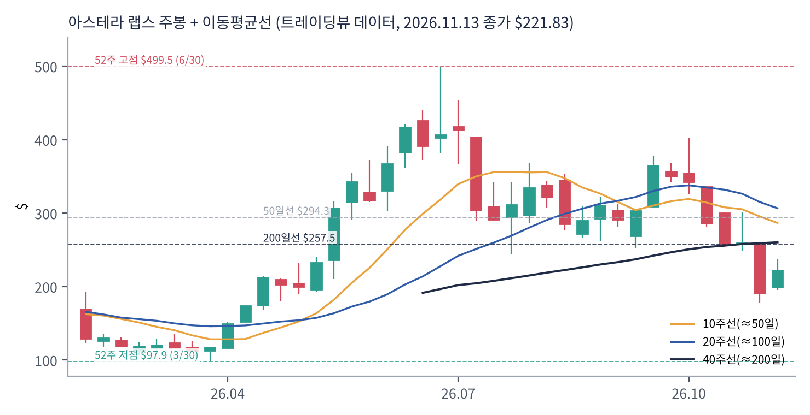
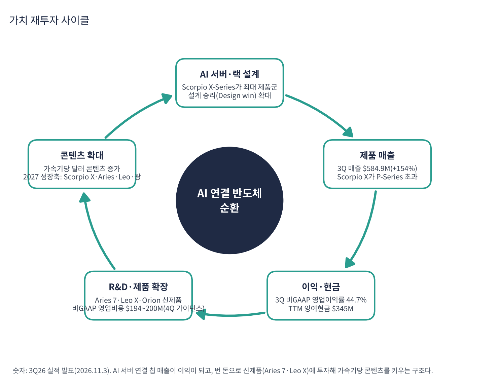

아스테라 랩스는 AI 서버·가속기 사이를 잇는 연결 반도체(Scorpio 스위치, Aries 리타이머, Taurus 800G, Leo 메모리 확장)를 만드는 회사다. 매출이 1년 만에 2.5배가 되고 GAAP도 흑자를 내지만, PER 88배와 총이익률 하락이 확인 지점인 회사다.
| 항목 | 내용 |
|---|---|
| 종목 | Astera Labs (ALAB) · NASDAQ · AI 연결 반도체 · 캘리포니아 새너제이 |
| 멀티플 | PER 88.0배(GAAP TTM) · P/S 26.94배 (11/13 종가 $221.83) |
| 최근 분기(3Q26) | 매출 $584.9M(+154%), GAAP EPS $0.99, 비GAAP EPS $1.32, 비GAAP 영업이익률 44.7% |
| 가이던스(4Q26) | 매출 $730~750M, 비GAAP EPS $1.62~1.66, 비GAAP 영업이익률 약 45% |
| 현금·부채 | 스캐너: 현금 $1,378M, 총차입금 $45M, TTM 잉여현금 $345M |
| 직책 | 인물 | 역할·특징 |
|---|---|---|
| CEO | 지텐드라 모한 | Scorpio를 최대 제품군으로 올리고 설계 승리를 확대했다고 설명 |
경영 스타일: '연결 부품에서 랙 규모 플랫폼으로 영역을 넓힌다'. 메모리·광·구리 신호 컨디셔닝 제품(Aries 7, Leo 2·X)과 랙 참조 설계(Orion)를 발표해 가속기당 달러 콘텐츠를 키우려 한다.
Scorpio X-Series 320레인 패브릭 스위치, PCIe 7 Aries 7, 800G Taurus, CXL 메모리 Leo.
레인 수가 많은 스위치와 광·구리 연결을 묶어 가속기당 콘텐츠를 늘리는 방향이다.
다음 실적발표(4Q26)는 세 가지 질문에 답하는 자리다.
질문 1. 매출이 가이던스($730~750M)를 달성하는가?
| 확인할 숫자 | 좋아지면 | 나빠지면 |
|---|---|---|
| 4Q 매출 $730~750M(+27% QoQ), 비GAAP EPS $1.62~1.66, GAAP EPS $1.13~1.17 | 가이던스 이상이면 ②제품 매출 고리가 유지된다 | 미달이면 Scorpio 램프 속도가 둔화된 신호다 |
질문 2. 총이익률이 72%대를 지키는가?
| 확인할 숫자 | 좋아지면 | 나빠지면 |
|---|---|---|
| GAAP 총이익률 72.3%(1년 전 76.2%), 4Q 가이던스 약 72% | 유지되면 ③이익 고리가 견고하다 | 하락 지속이면 제품 믹스(스위치 비중)가 마진을 낮춘다 |
질문 3. Aries 7·Leo X 등 신제품이 샘플링 일정을 지키는가?
| 확인할 숫자 | 좋아지면 | 나빠지면 |
|---|---|---|
| Aries 7 4Q 샘플링 시작 예정, Orion 랙 설계 OEM 공급 | 일정이면 ⑤콘텐츠 확대 고리가 열린다 | 지연이면 2027 성장 근거가 약해진다 |
한 줄 판정 규칙: 첫 질문이 가이던스 이상이면 약한 고리(마진 하락)가 완화되고, 마진이 계속 내려가면 PER 88배의 근거가 약해진다.
일정: 2027-02-16 예정(트레이딩뷰 일정, 회사 확정 확인 필요).
| 분기 | 매출 | 순이익 | EPS | 조정 EPS | 특이 사항 |
|---|---|---|---|---|---|
| 4Q24 | $141.0M | $25.0M | 0.15 | 0.37 | |
| 1Q25 | $159.0M | $32.0M | 0.18 | 0.33 | |
| 2Q25 | $192.0M | $51.0M | 0.29 | 0.44 | |
| 3Q25 | $231.0M | $91.0M | 0.50 | 0.49 | |
| 4Q25 | $271.0M | $45.0M | 0.25 | 0.58 | 4Q25 GAAP EPS가 직전 분기보다 높음(세금 효과 확인 필요) |
| 1Q26 | $308.0M | $80.0M | 0.44 | 0.61 | |
| 2Q26 | $392.0M | $153.0M | 0.83 | 0.80 | |
| 3Q26 | $585.0M | $183.0M | 0.99 | 1.32 | 3Q 매출 +49% QoQ, GAAP EPS $0.99, 비GAAP $1.32 |


값은 트레이딩뷰 스캐너 분기 이력이다. 조정 EPS는 트레이딩뷰 Reported(비GAAP)다. 4Q25 GAAP EPS 상승 원인은 공시로 확인하지 못했다(확인 필요). 분기 설비투자는 구하지 못했다.
흐름 요약: 매출이 4Q24 $141.1M에서 3Q26 $584.9M로 4배 이상 늘었다. 비GAAP EPS는 $0.37에서 $1.32로 올랐고 GAAP EPS도 $0.15에서 $0.99로 올랐다.
| 항목 | 값 | 비고 |
|---|---|---|
| 3Q 매출 | $584.9M(+49% QoQ, +154% YoY) | 회사 |
| 최대 제품군 | Scorpio 패브릭 스위치 | X-Series가 P-Series 초과 |
| GAAP 총이익률 | 72.3% | 1년 전 76.2% |
| 9개월 매출 | $1,286M | 회사 |
스위치(Scorpio)가 최대 제품군이 되면서 총이익률이 낮아졌다. 제품별 매출 비중 표는 이번에 구하지 못했다.
아스테라 랩스는 'AI 랙 안의 모든 연결(스위치·리타이머·메모리·광)을 공급하는 것'을 목표로 한다.
| 축 | 최근 움직임 |
|---|---|
| 제품 | Scorpio X·Aries 7·Leo X·Taurus |
| 참조 설계 | Orion 랙 아키텍처(OEM/ODM 공급 확인) |
| 시장 | 가속기당 달러 콘텐츠와 TAM 확대 |

| 이동평균 | 값 | 종가 대비 | 해석 |
|---|---|---|---|
| 5일선 | $222.72 | -0.4% | 현재가가 아래 |
| 20일선 | $246.96 | -10.2% | 현재가가 아래 |
| 50일선 | $294.27 | -24.6% | 현재가가 아래 |
| 100일선 | $313.23 | -29.2% | 현재가가 아래 |
| 200일선 | $257.46 | -13.8% | 현재가가 아래 (-14%) |
주봉 흐름: 52주 고점 $499.48(6/30), 52주 저점 $97.89(3/30). 현재가 $221.83는 200일선 $257.46보다 아래, 50일선 $294.27보다 아래에 있다.
| 규칙 | 기준 | 현재 값 | 신호 |
|---|---|---|---|
| 장기 추세 필터 | 종가 vs 200일선 | $221.83 < $257.46 | 매도 |
| 중장기 교차 | 50일선 vs 200일선 | $294.27 > $257.46 | 매수 |
| 단기 교차 | 20일선 vs 50일선 | $246.96 < $294.27 | 매도 |
| 돈키언 채널 | 55일 고가 $401.74 / 저가 $177.61 | 중간값 $289.68 아래 | 매도 |
| 1개월 모멘텀 | 21거래일 수익률 | -26.5% (기준 $301.98) | 매도 |
| 3개월 모멘텀 | 63거래일 수익률 | -30.7% (기준 $320.17) | 매도 |
| 6개월 모멘텀 | 126거래일 수익률 | -4.7% (기준 $232.68) | 매도 |
| 12개월 모멘텀 | 252거래일 수익률 | +40.6% (기준 $157.79) | 매수 |
| 종합 (8개 평균) | -0.50 | 매도 우위 |
해석: 8개 신호 중 매수 2개, 매도 6개(점수 -0.50, 매도 우위)다. 14일 ATR $25.40 (11.5%).
| 가격·조건 | 무엇이 바뀌나 | 의미 |
|---|---|---|
| $257.46 돌파 | 200일선 | 매도 → 매수 |
| 20일선이 50일선 위로 | 20/50 교차 | 매도 → 매수 |
| $289.68 돌파 | 돈키언 중간값 | 매도 → 매수 |
| $301.98 돌파 | 1개월 기준가 | 매도 → 매수 |
| $320.17 돌파 | 3개월 기준가 | 매도 → 매수 |
| 50일선이 200일선 위로 | 50/200 교차 | 이탈하면 매수 → 매도 |
| $157.79 돌파 | 12개월 기준가 | 이탈하면 매수 → 매도 |
| 구분 | 가격대 | 근거 |
|---|---|---|
| 저항 1 | $222.72 | 5일선 |
| 저항 2 | $246.96 | 20일선 |
| 지지 1 | $177.61 | 55일 저점 |
| 지지 2 | $97.89 | 52주 저점 |
점수는 -0.50(매도 우위)다. 14일 ATR은 $25.40로 현재가의 11.5%다. 가까운 저항 $222.72을 종가로 넘는지와 가까운 지지 $177.61를 지키는지가 신호 전환의 기준이다. (내 가정, 매매 권유 아님)
| 악재 요인 | 내용 | 강도 |
|---|---|---|
| 밸류에이션 | PER 88배, P/S 27배 | 높음 |
| 총이익률 | GAAP 72.3%(1년 전 76.2%), 4Q 가이던스 약 72% | 중간 |
| 고객 집중 | 소수 대형 고객 의존 여부는 공시 확인 필요 | 중간 |
| 주가 반응 | 3Q 호실적 직후 주가 하락(보도) | 중간 |
| 티커 | 회사 | PER(TTM) | PEG | P/S | EPS 성장(YoY) |
|---|---|---|---|---|---|
| ALAB | 아스테라 랩스 | 88.0배 | 0.73 | 26.94배 | +124% |
| CRDO | 크레도 | 46.9배 | 0.16 | 17.08배 | +312% |
| MRVL | 마벨 | 51.6배 | – | 16.03배 | – |
| AVGO | 브로드컴 | 44.3배 | 0.46 | 19.98배 | +100% |
| COHR | 코히런트 | 45.2배 | 0.08 | 5.93배 | +596% |
ALAB 첫 행은 스캐너 값이다. MRVL은 EPS 성장률이 산출되지 않았다. 동종 PEG는 기저효과가 큰 값이다.
아스테라는 현금성 자산 $1,378M에 차입금이 $45M뿐인 순현금 회사이고 TTM 잉여현금 $345M을 낸다. 흑자 기업이라 런웨이 문제는 없다.
| 지표 | 값 | 계산·출처 | 해석 |
|---|---|---|---|
| 현금 | $1,378M | 스캐너 | 차입금 $45M |
| 총차입금 | $45M | 스캐너 | 순현금 약 $1,333M(내 계산) |
| TTM 잉여현금흐름 | $345M | 스캐너 | TTM 매출 $1,556M 대비 약 22.2%(내 계산) |
| TTM EBITDA | $413M | 스캐너 | TTM 매출 대비 약 26.5%(내 계산) |
| 기준 | 값 | 비고 |
|---|---|---|
| P/S (TTM) | 26.94배 | 스캐너 |
| 동종 | CRDO 17.1, MRVL 16.0, AVGO 20.0, COHR 5.9 | 11/13 스캐너 |
해석: P/S 26.9배는 연결 반도체 동종 중 가장 높다. TTM 매출은 $1,556M이지만 최근 분기 매출 $584.9M 기준으로는 연 환산 $2.3B대라 성장 반영 정도가 크다(내 계산).
| 지표 | 값 | 판정 |
|---|---|---|
| PER (GAAP TTM) | 88.0배 | 스캐너 |
| PER (조정 TTM) | 약 67.0배 | $221.83 ÷ 최근 4분기 조정 EPS $3.31(내 계산) |
| TTM 잉여현금 마진 | 약 22.2% | $345M ÷ 매출 $1,556M(내 계산) |
| EBITDA 마진 | 약 26.5% | $413M ÷ $1,556M(내 계산) |
| 방식 | PER | EPS 성장률 | PEG | 판정 |
|---|---|---|---|---|
| 트레이딩뷰 (GAAP TTM) | 88.0배 | +124.4% | 0.73 | 투자 적격 구간 |
| 조정 EPS (내 계산) | 67.0배 | +103% | 약 0.65 | 최근 4분기 $3.31 ÷ 직전 4분기 $1.63 |
판정: GAAP PEG 0.73, 조정 PEG 약 0.65로 모두 1.0 이하라 투자 적격 구간(≤1.0)이지만 적극 매수 구간(≤0.5)은 아니다.직전 4분기가 낮은 기저라 성장률이 크게 나온 값이므로 4Q 가이던스(EPS $1.62~1.66 비GAAP)로 성장률이 유지되는지 확인해야 한다.

아스테라의 사이클은 AI 서버·랙 설계 → 제품 매출 → 이익·현금 → R&D·제품 확장 → 콘텐츠 확대다. 번 돈으로 신제품을 만들어 같은 가속기에 더 많은 칩을 판다.
| 고리 | 현재 숫자 | 고리 강도 | 약해지는 신호 |
|---|---|---|---|
| ① AI 서버·랙 설계 | 설계 승리 확대, Scorpio X 대량 생산 | 강함 | 고객 설계 일정 지연 |
| ② 제품 매출 | 3Q +154% | 강함 | 램프 속도 둔화 |
| ③ 이익·현금 | 영업이익률 44.7%, 잉여현금 $345M | 강함 | 총이익률 하락 |
| ④ R&D·제품 확장 | Aries 7·Leo X 신제품 | 보통 | 비용 증가(4Q 비GAAP 비용 $194~200M) |
| ⑤ 콘텐츠 확대 | 가속기당 콘텐츠 증가 | 보통 | 신제품 샘플링 지연 |
구조: ①②③은 강하지만 ③의 총이익률이 낮아지고 있다. 스위치 비중이 커질수록 마진이 내려가므로 이 고리가 약한 지점이다.